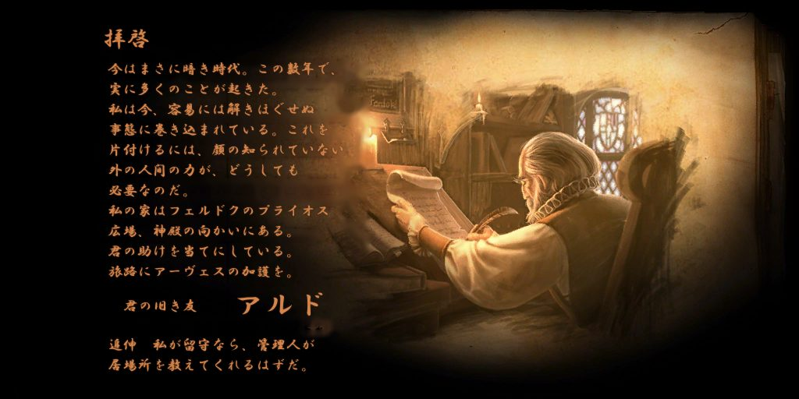
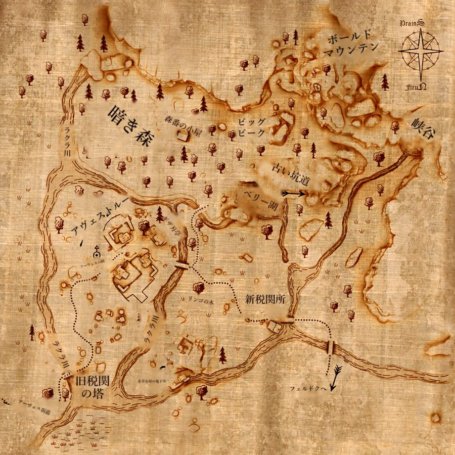
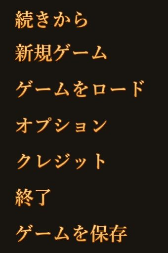
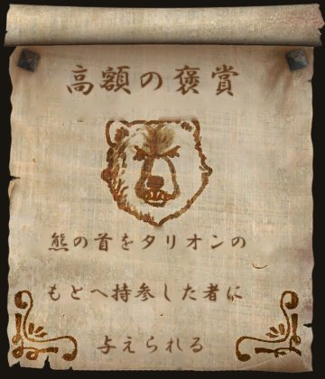

日本語化される内容
- テキスト 約2万7千行会話、クエスト日誌、アイテム・タレント・呪文の説明、メニューや設定画面の文章
- 用語と口調の統一用語集と文体ガイド、仲間や主要人物ごとの口調を決めてから訳しています
- 画像 99枚メインメニュー・ゲーム内メニュー、冒頭の手紙、地図 87枚、看板・手配書・黒板・神殿の碑文
- 日本語フォントNoto Sans JP を同梱。日本語は文節ごとに折り返されます
画像の例




対象
Steam 版 Drakensang: The Dark Eye（英語版、バージョン 1.03）。他の版でも動く可能性はありますが、確認していません。
導入方法
- リリースページから
Drakensang_JP_Patch_v○○.zipをダウンロードし、展開します。 - ゲームを終了しておきます。
- ゲームのフォルダ（
drakensang.exeがあるフォルダ）を開きます。
Steam のライブラリで Drakensang を右クリック →「管理」→「ローカルファイルを閲覧」 - 展開したフォルダの中にある
exportフォルダを、ゲームのフォルダにコピーします。
「ファイルを置き換える」か聞かれたら「置き換える」を選びます。
zip の中身はこうなっています。
Drakensang_JP_Patch_v1.0\
README.txt 説明書
OFL.txt フォントのライセンス
export\
db\locale.db4 日本語のテキスト（上書き）
data\fonts\Drakensang 日本語フォント（上書き）
textures\local\*.dds メニュー・手紙・看板・碑文の画像（追加）
textures\map\*.dds 地図の画像（追加）
上書きされるのは
export\db\locale.db4 と export\data\fonts\Drakensang の2つだけで、残りは新しく追加されるファイルです。
元に戻したくなったときのために、上書き前にこの2つを別の場所にコピーしておくと安心です。
Steam の「ゲームファイルの整合性を確認」を行うと、テキストとフォントが英語版に戻ります。その場合は、もう一度 export フォルダをコピーしてください。
元に戻す
- ゲームのフォルダの
export\texturesフォルダを削除します（日本語の画像はすべてここにあります）。 - Steam のライブラリで Drakensang を右クリック →「プロパティ」→「インストール済みファイル」→「ゲームファイルの整合性を確認」を実行します。テキストとフォントが英語版に戻ります。
上書き前にコピーしておいた2つのファイルを戻しても構いません。
注意点
- キャラクター名は英字で入力してください。名前の入力欄は日本語に対応していないため、日本語入力（IME）がオンのまま文字を打つとゲームがエラーで止まります。自動生成される名前や、会話中に出る主人公の名前も英字のままです。
- 環境によっては、フルスクリーンで起動した直後に
GetBackBuffer() on device failedというエラーで止まることがあります。日本語化とは関係なく起きる現象です。その場合は Steam のプロパティ →「起動オプション」に-windowed -w 1600 -h 900と入れると、ウィンドウモードで起動できます。 - ゲームは半角スペースの位置でしか改行できないため、日本語は文節ごとに半角スペースを入れて折り返しています。文中の小さな隙間はそのためです。
翻訳について
- 翻訳は AI（Claude）による機械翻訳です。用語集・文体ガイド・キャラクターごとの口調の設定を作ったうえで訳していますが、誤訳や不自然な表現、口調の揺れが残っています。
- 人名・神名などドイツ語由来の名前はドイツ語読みのカタカナ、英語版で英単語になっている名前は英語読みのカタカナ、意味のある地名や施設名は日本語訳にしています。
- 地図や看板の画像は、元の英文を消して日本語を描き直したものです。文字が絵（川・道・建物）と重なる箇所では、消した跡がぼやけて見えることがあります。
- 誤訳や表示の不具合を見つけたら、Issues で教えてください。
フォントと謝辞
- 日本語フォントは Noto Sans JP（© 2014-2021 Adobe, SIL Open Font License 1.1）を、ゲームが読み込める名前（DrakenFont）に変え、太さを固定したものです。改変版として OFL 1.1 に従って同梱しています（zip 内の
OFL.txt）。 - 画像の日本語は、Windows 付属の游明朝・HG行書体で描いています。
locale.db4とフォントの差し替えで日本語化できることは、Drakensang:The Dark Eye 情報まとめ wiki の「日本語化/日本語表示について」を参考にしました。